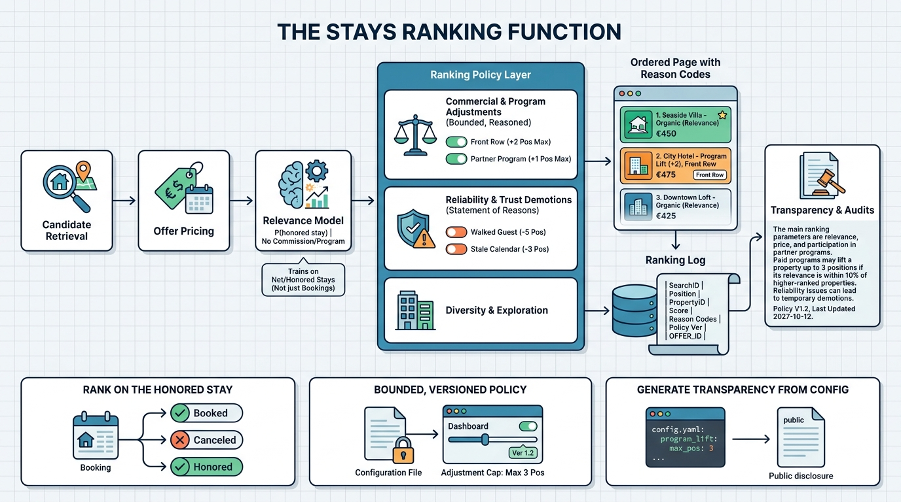

Part IV — DISCOVERY: From Intent to Bookable Stay
Ordering the Results: Ranking for Guests, Partners and the Marketplace

Image generated by Google Gemini (gemini-3-pro-image-preview)
Part IV — DISCOVERY: From Intent to Bookable Stay

Image generated by Google Gemini (gemini-3-pro-image-preview)